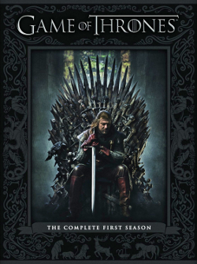
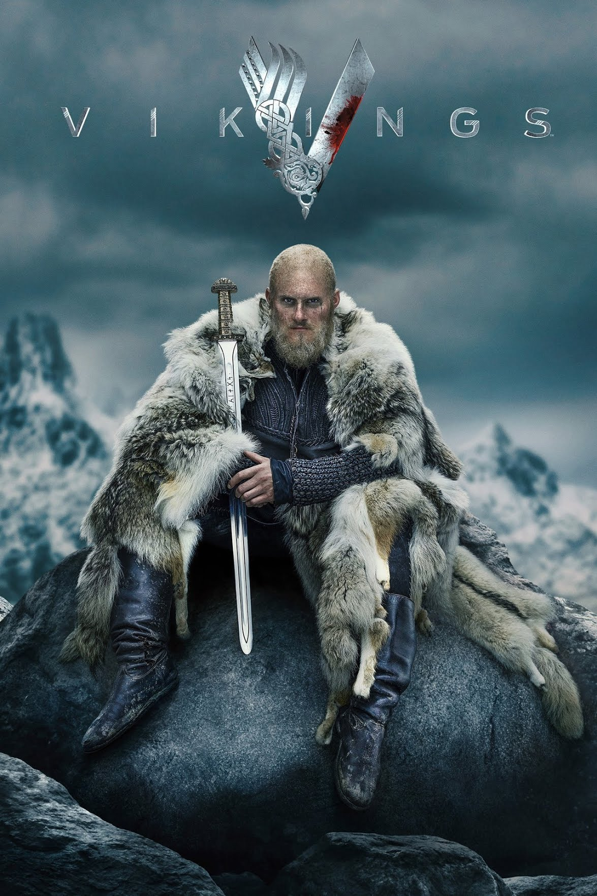
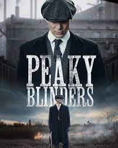

Favorite Action Series
Money Heist

Money Heist (Spanish: La casa de papel, [la ˈkasa ðe paˈpel], lit. 'The House of Paper') is a Spanish heist crime drama television series created by Álex Pina. The series traces two long-prepared heists led by the Professor (Álvaro Morte), one on the Royal Mint of Spain, and one on the Bank of Spain, told from the perspective of one of the robbers, Tokyo (Úrsula Corberó). The story is told in a real-time-like fashion and relies on an unreliable narrator, flashbacks, time-jumps and hidden character motivations for complexity.[2][3][4] The series was initially intended as a limited series to be told in two parts. It had its original run of 15 episodes on Spanish network Antena 3 from 2 May 2017 through 23 November 2017. Netflix acquired global streaming rights in late 2017. It re-cut the series into 22 shorter episodes and released them worldwide, beginning with the first part on 20 December 2017, followed by the second part on 6 April 2018. In April 2018, Netflix renewed the series with a significantly increased budget for 16 new episodes total. Part 3, with eight episodes, was released on 19 July 2019. Part 4, also with eight episodes, was released on 3 April 2020. A documentary involving the producers and the cast premiered on Netflix the same day, titled Money Heist: The Phenomenon (Spanish: La casa de papel: El Fenómeno). In July 2020, Netflix renewed the show for a fifth and final part, which was released in two five-episode volumes on 3 September and 3 December 2021, respectively.
Game of Thrones
The first season of the fantasy drama television series Game of Thrones premiered on HBO on April 17, 2011, in the U.S. and concluded on June 19, 2011. It consists of ten episodes, each of approximately 55 minutes. The series is based on A Game of Thrones, the first novel in the A Song of Ice and Fire series by George R. R. Martin, adapted for television by David Benioff and D. B. Weiss. HBO had ordered a television pilot in November 2008; filming began the following year. However, it was deemed unsatisfactory and later reshot with some roles recast. In March 2010, HBO ordered the first season, which began filming in July 2010, primarily in Belfast, Northern Ireland, with additional filming in Malta. The story takes place in a fantasy world, primarily upon the continent Westeros, with one storyline occurring on another continent to the east, Essos. Like the novel, the season initially focuses on the family of nobleman Eddard "Ned" Stark, the Warden of the North, who is asked to become the King's Hand (chief advisor) to his longtime friend, King Robert Baratheon.
Outer Banks
Outer Banks is an American action-adventure mystery teen drama television series created by Josh Pate, Jonas Pate, and Shannon Burke that premiered on Netflix on April 15, 2020.[4][5] The series is set in a community in the Outer Banks of North Carolina and follows the conflict between two groups of teenagers in search of a lost treasure. In June 2021, the series was renewed for a third season which premiered on February 23, 2023.[6][7] In February 2023, ahead of the third season premiere, the series was renewed for a fourth season.
Vikings
Vikings is a historical drama television series created and written by Michael Hirst for the History channel, a Canadian network. Filmed in Ireland, it premiered on March 3, 2013, in Canada. The series concluded on December 30, 2020, when the second half of the sixth season was released in its entirety on Amazon Prime Video in Ireland, ahead of its broadcast on History in Canada from January 1 to March 3, 2021. A sequel series, titled Vikings: Valhalla, premiered on Netflix on February 25, 2022.[1] Vikings is inspired by the sagas of Ragnar Lodbrok, a Viking who is one of the best-known legendary Norse heroes and notorious as the scourge of Anglo-Saxon England and West Francia. The show portrays Ragnar as a farmer from the Kattegat who rises to fame by raiding England and eventually becomes a Scandinavian king, with the support of his family and fellow warriors. In the later seasons, the series follows the fortunes of his sons and their adventures in England, Scandinavia, Kievan Rus', the Mediterranean and North America.
Peaky Blinders
Peaky Blinders is a British period crime drama television series created by Steven Knight. Set in Birmingham, it follows the exploits of the Peaky Blinders crime gang in the direct aftermath of the First World War. The fictional gang is loosely based on a real urban youth gang of the same name who were active in the city from the 1880s to the 1910s. It features an ensemble cast led by Cillian Murphy, starring as Tommy Shelby, Helen McCrory as Elizabeth "Polly" Gray, Paul Anderson as Arthur Shelby, Sophie Rundle as Ada Shelby, and Joe Cole as John Shelby, the gang's senior members. Sam Neill, Annabelle Wallis, Iddo Goldberg, Tom Hardy, Charlotte Riley, Finn Cole, Natasha O'Keeffe, Paddy Considine, Adrien Brody, Aidan Gillen, Anya Taylor-Joy, Sam Claflin, Amber Anderson, James Frecheville, and Stephen Graham also star. The programme began on 12 September 2013, broadcast on BBC Two until the fourth series (with repeats on BBC Four), then moved to BBC One for the fifth and sixth series. Netflix, under a deal with Weinstein Company and Endemol, acquired the rights to release the show in the United States and around the world. In January 2021, it was announced that the sixth series would be the last, followed by a spin-off film. The final series was broadcast in 2022.